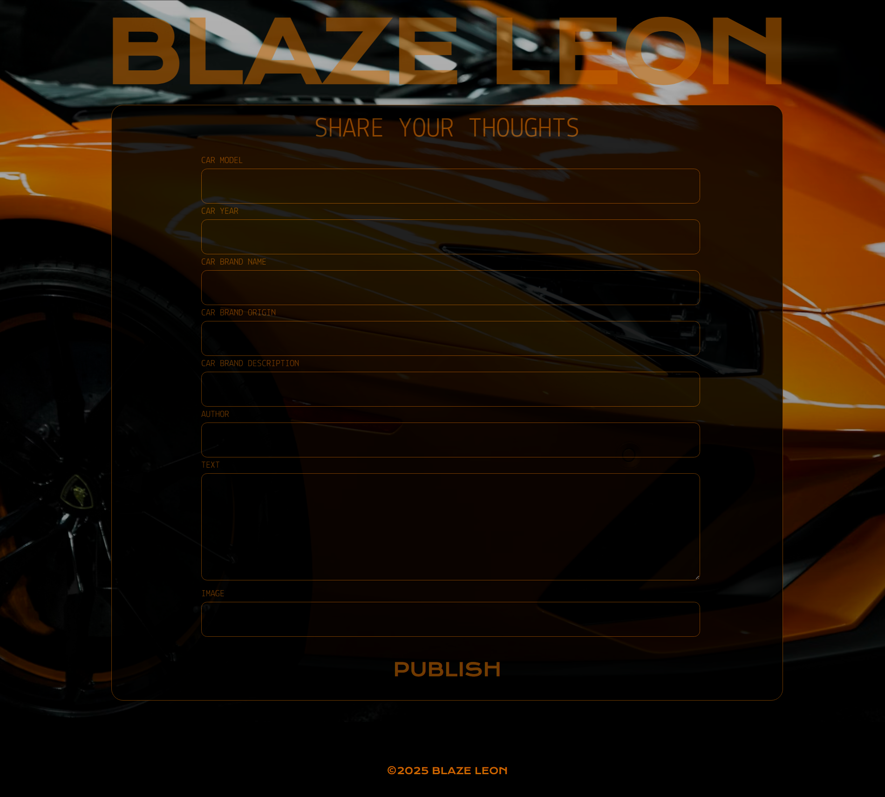
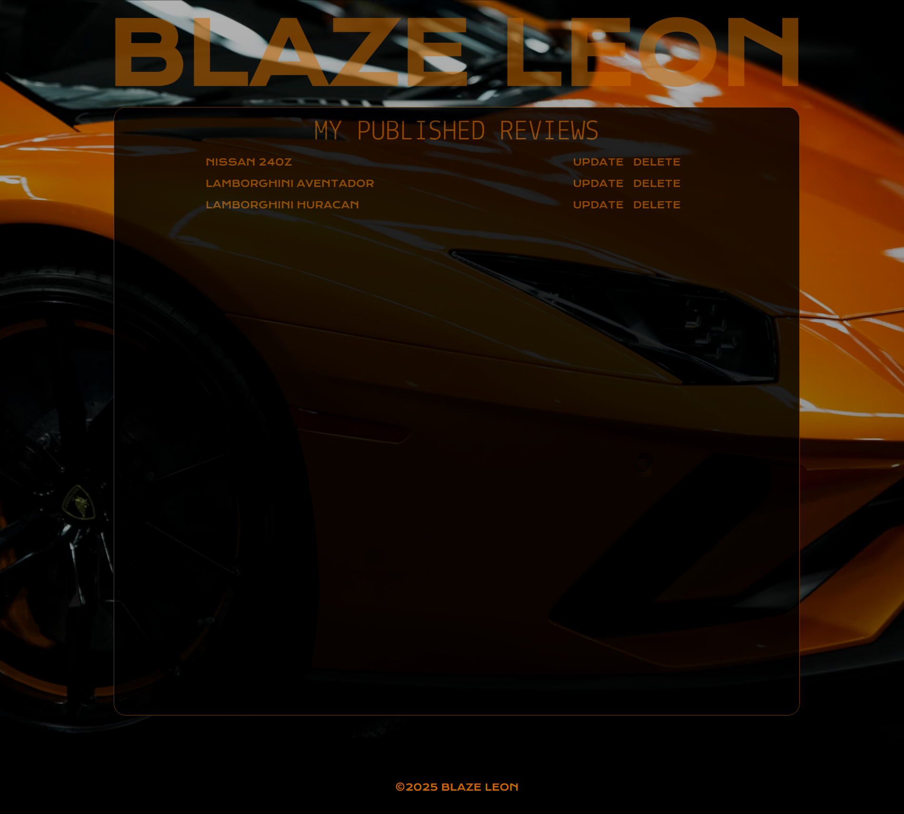
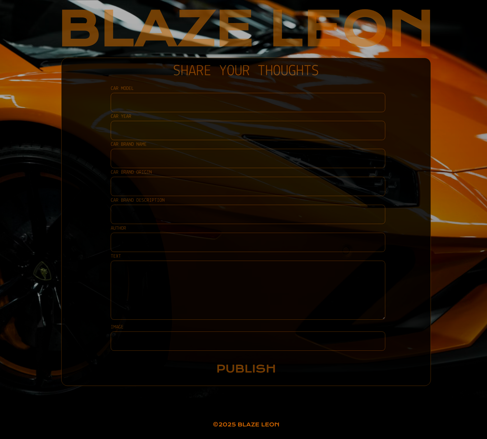
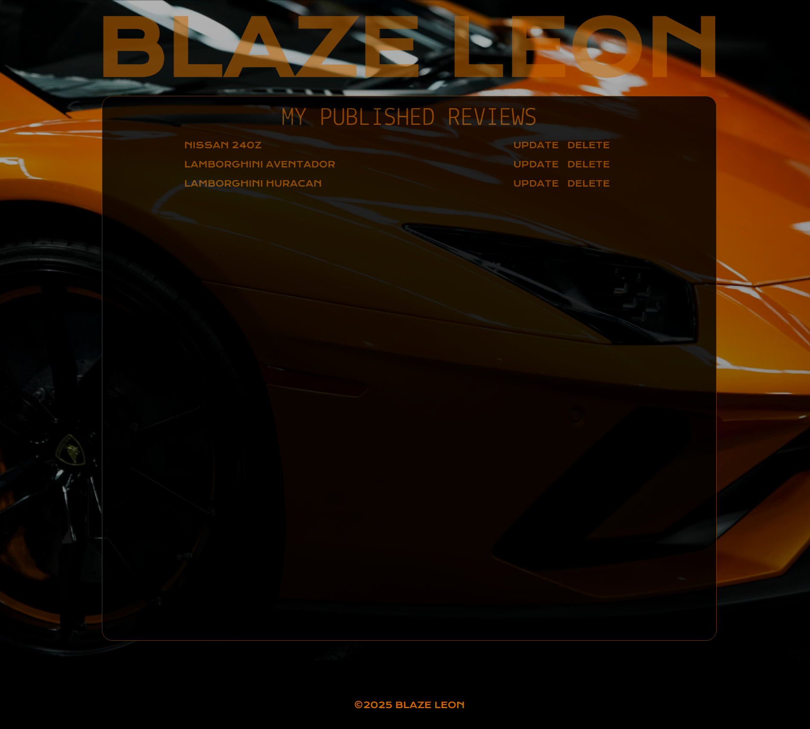

Mes réalisations
Blaze Leon, PHP, maquette Figma
Dans le cadre de ce projet, j'ai d'abord réalisé la maquette d'un blog dédié aux voitures de luxe à l'aide de Figma, afin de concevoir une interface claire, moderne et adaptée au thème. Une fois la maquette finalisée, je l'ai ensuite intégrée en codant le site en PHP sur Visual Studio Code. Ce travail m'a permis de passer de la conception visuelle à la mise en œuvre technique d'un site web dynamique.
- Pouvoir consulter les différentes publications
- Pouvoir publier une nouvelle publication
- Pouvoir gérer ses publications
- Gestion des likes
Fonctionnalités:
- Faire une maquette fonctionnelle des différentes page du blog.
- Faire un diagramme de classes pour identifier les différentes entités, leurs relations et leurs propriétés.
- Créer un fichier SQL avec les requêtes de mise en place de la base de données (table et jeu de données).
- Créer un projet PHP-composer bien structuré.
- Créer les classes entités.
- Créer identifier les requêtes SQL nécessaires pour les différentes pages et fonctionnalités.
- Créer les repositories et leurs méthodes correspondantes pour chaque entités.
- Faire l'affichage.
Compétences:

 


